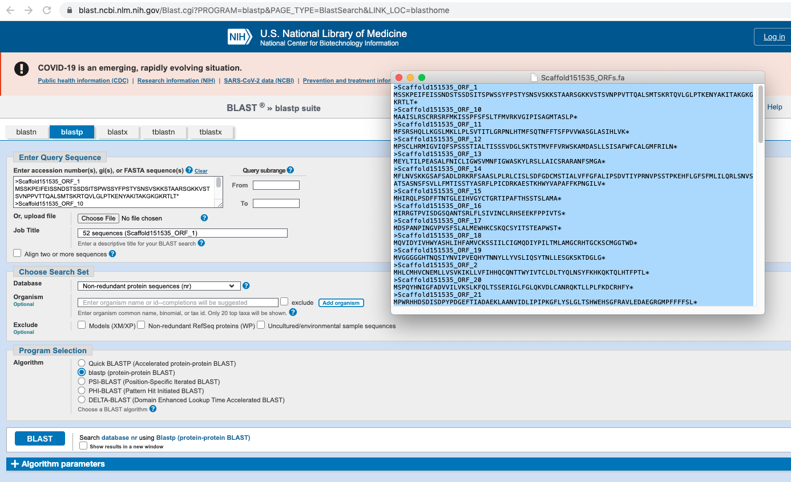
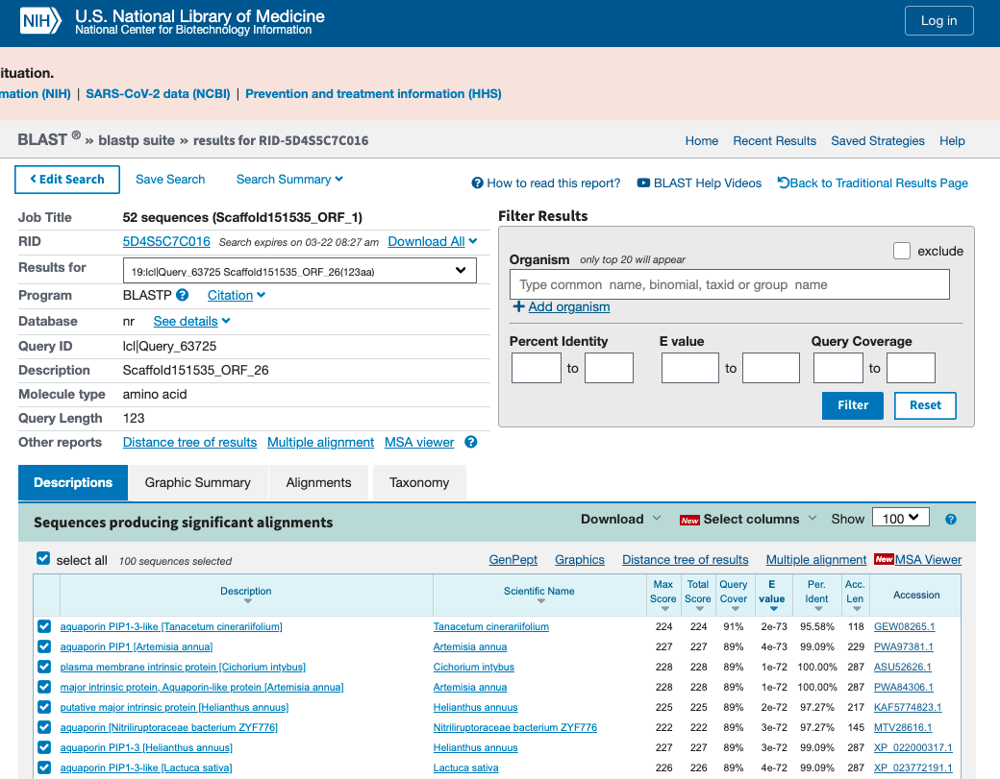
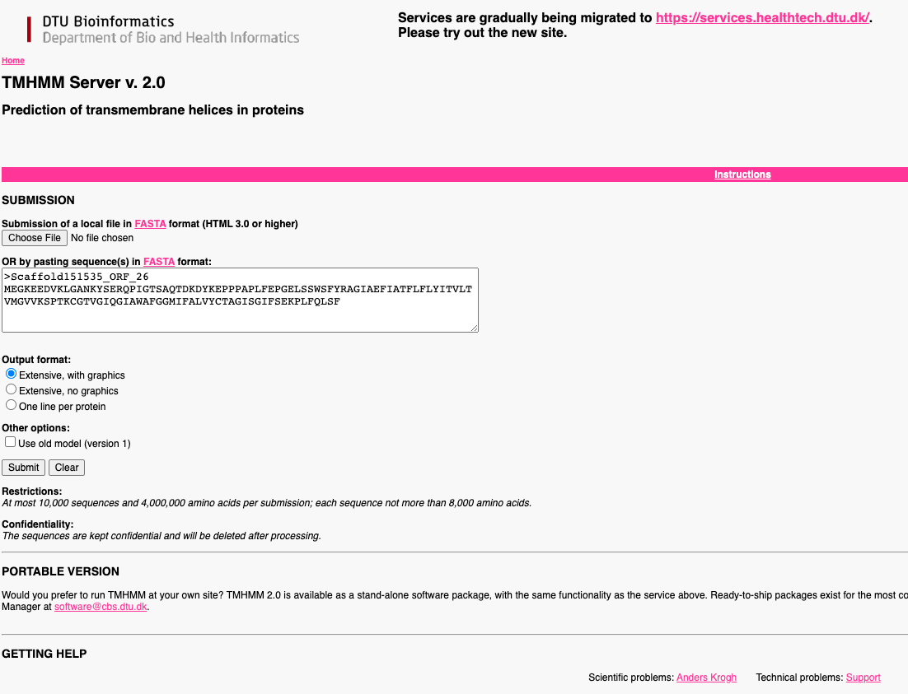
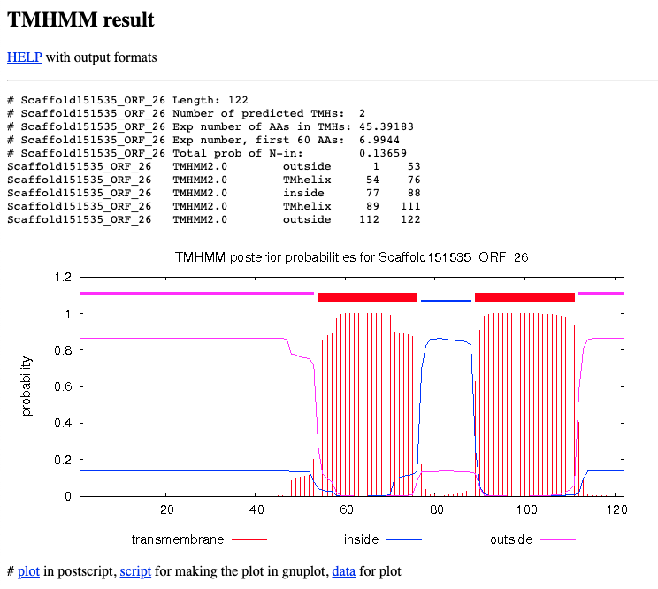
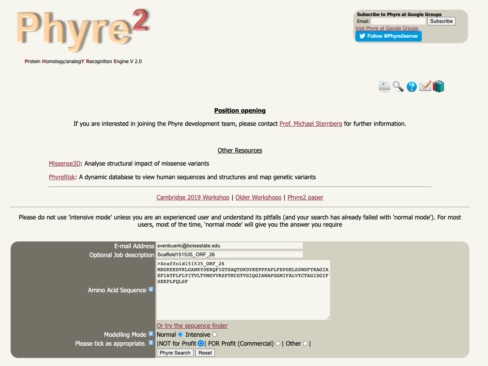
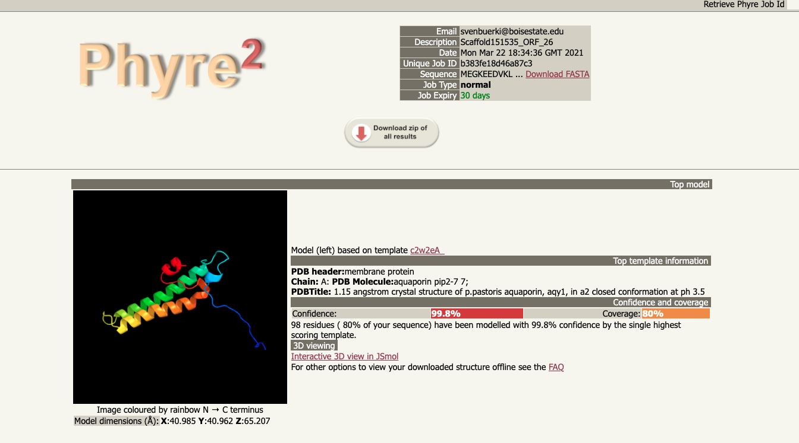

BIOL 497/597 - Genomics & Bioinformatics
Lab: Mining sagebrush draft genome
Sven Buerki & Anthony Melton - Boise State University
2021-03-22
1 Introduction
This document supports analyses aiming at mining the sagebrush (Artemisia tridentata Nutt; Asteraceae) draft genome for Aquaporin (AQP) genes. AQPs are multi-exon genes (see Figure 1.1) encoding for a large family of proteins known to function in the transport of water and other molecules across cell membranes (reviewed in Li et al., 2014).
![Flowchart showing the structure of a multi-exon gene and different resulting proteins. As a reminder, exons are pieces of coding DNA that encode proteins. Different exons code for different domains of a protein. The domains may be encoded by a single exon or multiple exons spliced together. In the case of multi-exon genes, the presence of exons and introns allows for greater molecular evolution through the process of exon shuffling and alternative splicing. Exon shuffling occurs when exons on sister chromosomes are exchanged during recombination. This allows for the formation of new genes. On the other hand, exons also allow for multiple proteins to be translated from the same gene through alternative splicing. This process allows the exons to be arranged in different combinations when the introns are removed/spliced. The different configurations can include the complete removal of an exon, the inclusion of part of an exon, or the inclusion of part of an intron. Alternative splicing can occur in the same location to produce different variants of a gene with a similar role, such as the human slo gene, or it can occur in different cell or tissue types, such as the mouse alpha-amylase gene. Alternative splicing, and defects in alternative splicing, can result in a number of diseases including cancer.](Images/multi_exon_gene.png)
Figure 1.1: Flowchart showing the structure of a multi-exon gene and different resulting proteins. As a reminder, exons are pieces of coding DNA that encode proteins. Different exons code for different domains of a protein. The domains may be encoded by a single exon or multiple exons spliced together. In the case of multi-exon genes, the presence of exons and introns allows for greater molecular evolution through the process of exon shuffling and alternative splicing. Exon shuffling occurs when exons on sister chromosomes are exchanged during recombination. This allows for the formation of new genes. On the other hand, exons also allow for multiple proteins to be translated from the same gene through alternative splicing. This process allows the exons to be arranged in different combinations when the introns are removed/spliced. The different configurations can include the complete removal of an exon, the inclusion of part of an exon, or the inclusion of part of an intron. Alternative splicing can occur in the same location to produce different variants of a gene with a similar role, such as the human slo gene, or it can occur in different cell or tissue types, such as the mouse alpha-amylase gene. Alternative splicing, and defects in alternative splicing, can result in a number of diseases including cancer.
The defining characteristics of AQP proteins include having six membrane-spanning alpha-helices and two hydrophobic loops containing conserved asparagine-proline-alanine (NPA) motif which form a barrel surrounding a central pore-like region that contains additional protein density (see Figure 1.2). While the NPA motifs are generally highly conserved, there are some AQP genes that have undergone mutations of the alanine residue in the NPA motif (Ishibashi, 2006). AQPs in flowering plants comprise five subfamilies: (1) NOD26-like intrinsic proteins (NIPs), (2) plasma membrane intrinsic proteins (PIPs), (3) small basic intrinsic proteins (SIPs), (4) tonoplast intrinsic proteins (TIPs), and (5) X intrinsic proteins (XIPs) (Danielson and Johanson, 2008). Genes from each subfamily tend to move water or other substrate depending on their NPA motifs. Some AQPs, such as NIPs, have acquired a mutation in their NPA motif, such as alanine to leucine, which confer the ability to move substrates such as urea or ammonium (reviewed in Chaumont et al., 2005).
Figure 1.2: Example of a 3D model of an Aquaporin protein recovered in the sagebrush genome. NPA motifs are shown by red/orange colors
2 Learning outcomes
As part of this lab, students will gain the following learning outcomes:
- Learn protocol to remotely access to a unix-based computer (see Tutorials).
- Learn unix-based commands to organize projects and execute code (see Tutorials).
- Provide introduction to running R code and developing your own R code (this topic was also partially covered in Mini-Report 3).
- Study protocols to mine Illumina de novo draft genome (at scaffold level) for target genes.
- Predict and annotate genes recovered from genome mining process.
- Reconstruct protein sequences of annotated genes.
- Validate protein sequence and predict function.
3 Objectives and scientific question
Instructors teach students to conduct analyses by going over each module in class demonstrating the approach to mine genome for target gene and go over steps to assemble and validate protein product. Then, each group will be assigned a scaffold (from the de novo genome assembly) and they will have to conduct analyses presented in modules 2 to 4 on their own to answer the following question:
What Aquaporin protein coding sequence is “hidden” in your assigned scaffold?
Very much the same as with the “Where’s waldo?” children books, students will be able to make predictions to “find” their Aquaporin protein coding sequence based on material presented in the Introduction and further developed in modules 2, 3 and 4. These material will allow students to design their analytical workflow covering the following major steps:
- Predict, annotate and identify AQP genes along scaffold.
- Reconstruct and validate AQP protein sequences.
- Predict AQP protein function (by intersecting evidence recovered from the previous steps).
3.1 Scaffolds assigned to groups
The FASTA file with scaffolds sequences can be downloaded here. The scaffolds assigned to each group are as followed:
- Group A: Scaffold106379.
- Group B: Scaffold254734.
- Group C: Scaffold348135.
- Group D: Scaffold355053.
Let’s complete the training first going by through each module and then students will be working in groups to replicate this approach to their assigned scaffold. Fridays of weeks #12 and 13 will be dedicated to group work using Zoom breakout rooms.
4 Analytical workflow
Overall, our analytical workflow is subdivided into 4 modules as follows:
5 Project structure
5.1 Where are the data located?
All the data associated to this project are located on your individual account in the DraftGenomeMineR/ folder. This folder is located in /home/bio_11/DraftGenomeMineR. Please replace bio_11 by your account detail.
Key files:
Draft_Genome_Assembly.fasta: Sagebrush draft genome assembly (at scaffold level).FASTAs/PIP1_3.fa: Reference containing PIP1 gene (AA) for BLAST analysis. This data will be used to find Aquaporin genes in the draft genome.- Scripts related to each module are located in
Lesson_Modules/.
5.2 How do I access the data and run analyses?
To access the data and run the analyses, please remotely connect to your dedicated computer using ssh protocol. Your credentials are available here.
6 Module 1
6.1 Objectives
This module is dedicated to presenting approach to set-up your working environment and then to identify scaffolds in the de novo genome assembly containing AQP genes (using BLAST).
6.2 Remotely connect to computer
Start by using ssh protocol to connect to your Linux computer. This is done as follows (enter password when prompted to):
#SSH with bio_11 as example
ssh bio_11@132.178.142.2146.3 Copy project folder to remote computer
After downloading the zip file from our shared Google Drive to your personal computer, please copy this file to your Linux computer (on your personal account) as follows:
#scp file: general syntax
scp file user@host:dir
#Example
scp DraftGenomeMineR.zip bio_11@132.178.142.214:/home/bio_11
#unzip file
unzip DraftGenomeMineR.zipDisclaimer: This procedure only works if you have a unix-based computer. If you don’t have a unix-based computer, please ask instructors to transfer this file for you to your account. However, students can cp this file by copying it from the bioinformatics account onto their Linux computer as follows:
#Navigate where the zip file should reside (adjust path to your account ID)
cd /home/bio_11
#Copy the zip file (containing all data for project) on your Linux account
cp /home/bioinformatics/GenomeMining_Bioinformatics_2021/DraftGenomeMineR.zip .
#unzip file
unzip DraftGenomeMineR.zip6.4 Start R session
Navigate to DraftGenomeMineR/ and start a new R session:
#Navigate to DraftGenomeMineR/
cd DraftGenomeMineR/
#Start R session
R-46.5 Load R packages and user-defined functions
Create an object with all the required R packages and load them:
# This will make a list of packages that another function will use to make sure they are all installed and loaded.
list.of.packages <- c("ape",
"Biostrings",
"dplyr",
"FastaUtils",
"ORFik",
"readr",
"tidyr",
"rBLAST",
"seqinr",
"stringr")
# Use lapply to load all of the packages in the list.
lapply(list.of.packages, require, character.only = TRUE)Load all the user-defined function located in Functions/:
# Load all of the functions written for DraftGenomeMineR
files.sources <- list.files("Functions", full.names=T)
sapply(files.sources, source)6.6 Setting environment for BLAST analysis
To be able to navigate between folders within our project, we will set a object entitled project.folder, which contains the path to the root of the folder.
To create this object, do as follows:
#Copy the output of getwd() in the object as follows:
project.folder <- getwd()Call project.folder to check that it is right. It should be:
"/home/bio_11/DraftGenomeMineR" (with bio_11 replaced by your account ID).
Set working directory to project.folder as follows:
setwd(project.folder)6.7 Running BLAST analysis
Set general parameters for the BLAST analysis:
# There are a few parameters that need to be set. Let's create some R objects to store file paths and parameters for the BLAST search.
# We need a query (a fasta file of a gene you want to find in the draft genome), a draft genome assembly, BLAST databases, paths to other required folders (described in the README), and other parameters that can be used to filter results.
query.file.path <- "FASTAs/PIP1_3.fa"
genome.file.name <- "Draft_Genome_Assembly.fasta"
genome.path <- "FASTAs/Draft_Genome_Assembly.fasta"
blast.db.path <- "BlastDBs/Draft_Genome_Assembly.fasta"
AA.BlastDB.folder <- "AA_BlastDB/"
AA.ORF.folder <- "AA_ORFs/"
max.e <- 5E-50
perc.ident <- 90.000
query.type <- "AA"
blast.type <- "tblastn"
make.BlastDB <- T
BlastDB.type <- "nucl"Read in the sagebrush draft genome assembly in FASTA format:
# Read in the genome assembly file
genome <- readLines(con = genome.path)
head(genome) # Print the top 6 lines of the fasta. There should be no spaces in what is printed. Each header should be on one line, followed by its entire scaffold on the next.Make a BLAST database for query:
# Do you need to make a BLAST database or use an existing one?
if(make.BlastDB == TRUE){
setwd("BlastDBs/")
makeblastdb(file = genome.file.name, dbtype = BlastDB.type)
}Read in the query file in FASTA format:
# Read in the query. What type of molecule is the query? DNA (or RNA) or amino acid sequences?
setwd(project.folder) # Previous lines changed the wd, so we need to go back to the project folder.
if (query.type == "DNA") {
query <- readDNAStringSet(filepath = query.file.path,
format = "fasta")
} else {
query <- readAAStringSet(filepath = query.file.path,
format = "fasta")
}Perform BLAST analysis (BLAST needs to be installed on the computer):
# Now we have everything set up and can perform a BLAST search.
bl <- blast(db = blast.db.path, type = blast.type) # Create an object with the BLAST database and the type of BLAST search to perform.
cl <- predict(bl, query) # Perform the BLAST search
head(cl) # Look at the top BLAST hitsFilter output of BLAST analysis:
# We can now filter out bad BLAST hits using a few thresholds and parameters. This leaves us with only the best matches to our query.
# What parameters do you think would give you just the best candidates to be your gene of interest?
cl.filt <- subset(x = cl, Perc.Ident >= perc.ident & E <= max.e)
cl.filt.unique <- cl.filt[!duplicated(cl.filt[,c('SubjectID')]),] # SubjectID is the column that contains the scaffold names
cl.filt.unique
nrow(cl)
nrow(cl.filt)
nrow(cl.filt.unique)
blast.hits.to.extract <- subset(x = cl.filt.unique, SubjectID == cl.filt.unique[1,2]) Write output of BLAST analysis in csv file:
# We have evaluated the top BLAST hits and can see a clear best hit. Let's save this data so we can extract just that scaffold later.
write.csv(x = blast.hits.to.extract, file = "Unique_Filtered_Blast_Hit_Info.csv", row.names = F)7 Module 2
7.1 Objectives
In this module, we are conducting the following tasks:
- Setting up your working environment (as shown in module 1)
- Extracting scaffold(s) identified in module 1 from the de novo draft genome assembly (in
FASTAs/Draft_Genome_Assembly.fasta) and saving the output as aFASTAobject/file. - Finding ORFs along scaffold(s) using the user-defined function findORFsTranslateDNA2AA() and saving the output into a
FASTAobject/file. In molecular genetics, an Open Reading Frame (ORF) is the part of a reading frame that has the ability to be translated. An ORF is a continuous stretch of codons that begins with a start codon (usually AUG) and ends at a stop codon (usually UAA, UAG or UGA). We will study the code implemented in findORFsTranslateDNA2AA() to fully understand the applied approach. - Produce maps of recovered ORFs along scaffold(s). These
pdfmaps will be saved inORFs_map/.
7.2 Setting up your working environment
Before starting analyses in R, students have to complete these following tasks:
- Remotely connect to their computers (using their individual accounts) with
sshprotocol. - Navigate to project directory (
DraftGenomeMineR/) usingcd. - Create a new folder (
Output_FASTAs/) usingmkdirto store results of BLAST scaffold analysis. - Create a new folder (
ORFs_report/) usingmkdirto store results of ORFs analysis. - Start a new
Rsession usingR-4command. - Load R packages and user-defined functions.
- Set working directory to
DraftGenomeMineR/.
For an example of code, see below:
#1. ssh
ssh svenbuerki@132.178.142.214
#scp file
#scp DraftGenomeMineR.zip svenbuerki@132.178.142.214:/home/svenbuerki
#unzip file
#unzip DraftGenomeMineR.zip
#2. Navigate to DraftGenomeMineR/
cd DraftGenomeMineR/
#3. & 4. Create new folders
mkdir Output_FASTAs/
mkdir ORFs_report/
#5. Start R session
R-4
#6. This will make a list of packages that another function will use to make sure they are all installed and loaded.
list.of.packages <- c("ape",
"Biostrings",
"dplyr",
"FastaUtils",
"ORFik",
"readr",
"tidyr",
"rBLAST",
"seqinr",
"stringr")
# Use lapply to load all of the packages in the list.
lapply(list.of.packages, require, character.only = TRUE)
# Load all of the functions written for DraftGenomeMineR
files.sources <- list.files("Functions", full.names=T)
sapply(files.sources, source)
#7. Copy the output of getwd() in the object as follows:
project.folder <- getwd()
#Set wd
setwd(project.folder)7.3 Extracting scaffold(s) in de novo assembly
Open Unique_Filtered_Blast_Hit_Info.csv containing results of BLAST analysis and extract name of target scaffold(s).
#Open BLAST file
cl.filt.unique <- read.csv(file = "Unique_Filtered_Blast_Hit_Info.csv") # Output of module 1
#Scaffold IDs
cl.filt.unique$SubjectIDExtract scaffold(s) sequences from draft genome file (FASTAs/Draft_Genome_Assembly.fasta).
#Open draft genome file
genome <- readLines("FASTAs/Draft_Genome_Assembly.fasta")
#Check formatting of file
head(genome)
#How many scaffolds?
Nscaff <- length(genome)/2
#Extract scaffolds in a loop
#Create data frame to store scaffold data
scaffold <- data.frame("scaffoldID" = character(length(cl.filt.unique$SubjectID)), "scaffoldSeq" = character(length(cl.filt.unique$SubjectID)))
#Start populating data frame
scaffold$scaffoldID <- cl.filt.unique$SubjectID
for(i in 1:nrow(scaffold)){
# Find and Extract seq of each scaffold from draft genome FASTA file
scaffold$scaffoldSeq[i] <- genome[match(paste0(">",scaffold$scaffoldID[i]), genome)+1]
}
#Convert into FASTA format
scaffoldFASTA <- apply(scaffold, 1, paste, collapse="\n")
#Save/export FASTA file
write.table(scaffoldFASTA, "Output_FASTAs/Scaffold151535.fa", row.names = F, col.names=F, quote = F)7.4 Finding ORFs along scaffold(s)
We will now find ORFs in scaffold(s) using findORFsTranslateDNA2AA(). This user-defined function relies on the ORFik R package. The output will be saved in ORFs_report/.
scaffold <- readLines("Output_FASTAs/Scaffold151535.fa")
scaffoldID <- grep(pattern = "^>", x = scaffold, value = T)
scaffoldID <- gsub(pattern = ">", replacement = "", x = scaffoldID)
tryCatch(
{
for(i in 1:length(scaffoldID)){
findORFsTranslateDNA2AA(scaffold = scaffold, scaffoldID = scaffoldID[i], MinLen = 40)
}
})We should now have ORFs reports and FASTA files of translated ORFs. Let’s check these outputs.
orf.report <- read.csv("ORFs_report/Scaffold151535_ORFs.csv")
#How many ORFs were found?
nrow(orf.report)
#What are the longest ORFs?
orf.report[order(-orf.report$width),]
#Look at translated ORFs (=AA sequences)
translated.orfs <- readLines("AA_ORFs/Scaffold151535_ORFs.fa")
head(translated.orfs)7.5 Produce maps of recovered ORFs along scaffold(s)
Here, we are visualizing the ORFs recovered by our analysis along each scaffold by producing maps saved in pdf format in ORFs_map/. The code also checks if the folder ORFs_map/ where files will be saved exists and if not creates it.
###
#Build map of scaffold with ORFs
###
#Read scaffold FASTA file (line by line)
scaffold <- readLines("Output_FASTAs/Scaffold151535.fa")
#List all files with ORFs
ORFfiles <- list.files(path = "ORFs_report", pattern = ".csv", full.names = T)
#Check if folder where ORF maps will be saved exists
# if not then creates it
output_dir <- file.path(paste0(getwd(), "/ORFs_map/"))
if(dir.exists(output_dir)){
print(paste0("Dir", output_dir, " already exists!"))
}else{
print(paste0("Created ", output_dir))
dir.create(output_dir)
}
#Produce a map (in pdf format) for each scaffold
for(i in 1:length(ORFfiles)){
print(ORFfiles[i])
#Read file in
ORF <- read.csv(ORFfiles[i])
#Process FASTA scaffold sequence
seq <- strsplit(scaffold[grep(paste(">", ORF$scaffoldID[1], sep=''), scaffold)+1], split='')
#Separate ORFs by strand
ORFplus <- subset(ORF, ORF$strand == "+")
ORFneg <- subset(ORF, ORF$strand == "-")
#Create plot
pdf(paste("ORFs_map/", ORF$scaffoldID[1], "_ORFs_annotated.pdf", sep=''))
#Initiate plot
plot(x=1, y=1, xlim=c(0,length(seq[[1]])), ylim=c(0,2), type='n', bty="n", axes=F, xlab = "", ylab='')
#Add title
text(x=5, y=2, paste(ORF$scaffoldID[1], " (strand: + in grey and - in blue)", sep=''), adj=0, cex=.8)
#Create a segment with length of scaffold
segments(x0=0, x1=length(seq[[1]]), y0=1, y1=1, col='black', lwd=3)
#Add ORFs: rectangles (grey: +, blue: -)
rect(xleft=ORFplus$start, xright=ORFplus$end, ybottom=0.75, ytop=1.25, col='grey')
rect(xleft=ORFneg$start, xright=ORFneg$end, ybottom=0.75, ytop=1.25, col='blue')
text(x=(ORFneg$start + ORFneg$end)/2, y=0.7, paste(ORFneg$ORFID, " (", ORFneg$start, ":", ORFneg$end, ")", sep=''), srt=90, col='blue', adj=1, cex=0.4)
text(x=(ORFplus$start + ORFplus$end)/2, y=1.3, paste(ORFplus$ORFID, " (", ORFplus$start, ":", ORFplus$end, ")", sep=''), srt=90, col='black', adj=0, cex=0.4)
#Add x axis
axis(side = 1)
mtext("Sequence (bp)", pos = c(0,0.5), side=1, line=2, cex.lab=0.6,las=1)
#Close pdf
dev.off()
}Figure 7.1 shows the location of predicted ORFs along Scaffold151535 inferred by the code displayed above.
Figure 7.1: Map of predicted ORFs along scaffold151535.
8 Module 3
8.1 Objectives
In this module, we are conducting the following tasks:
- Annotate ORFs inferred in module 2 using online protein BLAST tool. Students will use the output of the protein BLAST analysis to identify ORF(s) coding for Aquaporin genes.
- Extract ORF(s) identified by protein BLAST analysis to reconstruct Aquaporin gene sequence. Students will provide DNA sequence of Aquaporin gene located on scaffold and its associated protein sequence.
8.2 Annotate ORFs using online protein BLAST tool
8.2.1 Input file for protein BLAST analysis
The FASTA file Scaffold151535_ORFs.fa (see Figure 8.1) containing AA sequences of ORFs identified in module 2 is available on the shared Google Drive here.
Figure 8.1: FASTA file containing all AA sequences for ORFs inferred along scaffold. See module 2 for more details.
8.2.2 Protein BLAST analysis
- Students download input file on their personal computers and open it in their favorite text editor.
- Go on the online protein BLAST platform (described in Altschul et al., 1997).
- Copy content of
Scaffold151535_ORFs.faas shown in Figure 8.2 and pressBLASTbutton to send the query.Figure 8.2: Online protein BLAST form.
- Inspect output of protein BLAST analysis and identified ORF(s) along scaffold coding for Aquaporin gene products (see 8.3).

Figure 8.3: Output of the protein BLAST analysis. Use the dropdown button to select each ORF and identify their gene products.
- What ORFs are coding for Aquaporin gene products?
8.3 Extract ORF(s) identified by protein BLAST analysis to reconstruct Aquaporin gene sequence
Students are tasked to develop an R code producing the DNA sequence of Aquaporin gene located on identified scaffold and its associated protein sequence.
9 Module 4
9.1 Objectives
The objectives of this module are to validate the AQP protein sequences obtained in module 3 and infer its function. This will be done by conducting the following analyses:
- Prediction of protein transmembrane helices based on the approach implemented in TMHMM (Krogh et al., 2001). This approach relies on Hidden Markov Models.
- Identifying NPA motifs using R script relying on Biostring (Pagès et al., 2019) package.
- Model 3D AQP protein using approach implemented in Phyre2 and predict protein (therefore its function). The approach for protein modeling, prediction and analysis is presented in Kelley et al. (2015).
9.1.1 Predictions
To be valid, the AQP protein sequence should have:
- Six transmembrane helices and two loops.
- Each loop should contain an NPA motif.
- Mutations in NPA motifs will indicate changes in the channeled molecule (therefore changing its function).
9.2 Prediction of protein transmembrane helices (and outside loops)
To conduct this analysis (based on >Scaffold151535_ORF_26) do the following:
- Go to the TMHMM website: http://www.cbs.dtu.dk/services/TMHMM/
- Paste the
FASTAAA sequence generated in module 3, here corresponding toScaffold151535_ORF_26as shown in Figure 9.1 and submit the analysis.Figure 9.1: Snapshot of TMHMM website showing how to submit job.
- Inspect output of TMHMM analysis (see Figure 9.2). For AQP proteins, we expect:
- Number of predicted TMHs (= Trans-Membrane Helix): 6.
- Outside loops: 2.

Figure 9.2: Snapshot of TMHMM results.
9.3 Identifying NPA motifs
9.4 Model 3D AQP protein
To model 3D structure of AQP protein and predict its function do the following (here based on >Scaffold151535_ORF_26):
- Go to Phyre2 website: http://www.sbg.bio.ic.ac.uk/~phyre2/html/page.cgi?id=index
- Copy
FASTAAA sequence and fill form as shown in Figure 9.3. Once completed, please submit job by pressingPhyre Search. The job will take ca. 50 minutes to run.Figure 9.3: Snapshot of Phyre2 website used to model 3D structure of protein and predict its function.
- You will relieve an email when the analysis is completed. A link to the output of the Phyre2 analysis will send you to the report page as shown in Figure 9.4.

Figure 9.4: Results of Phyre2 analysis.
- Note that although the AQP protein sequence is not complete, the analysis still modeled it correctly and predicts that it belong to the PIP subfamily (see Figure 9.4).